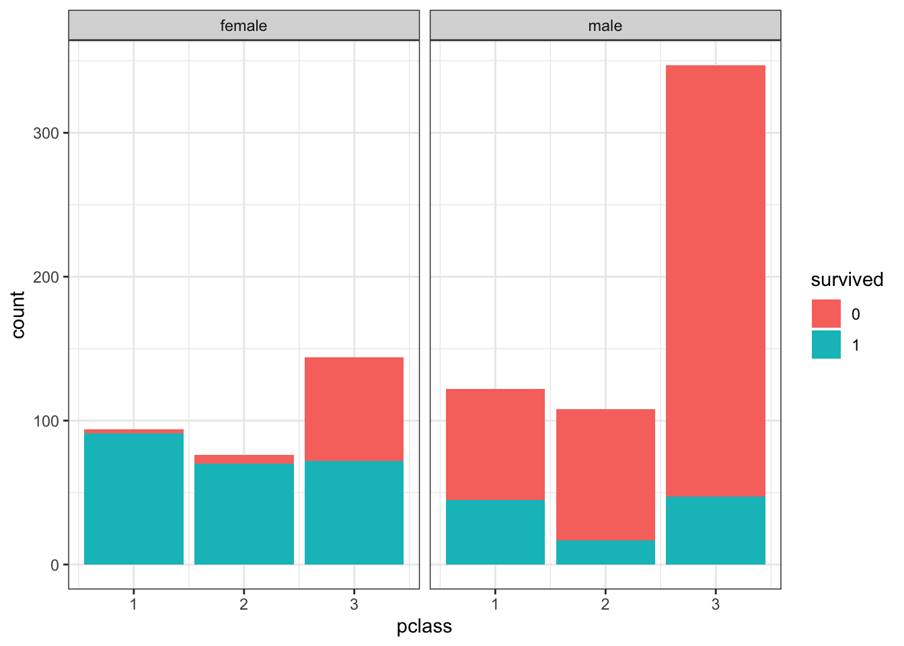
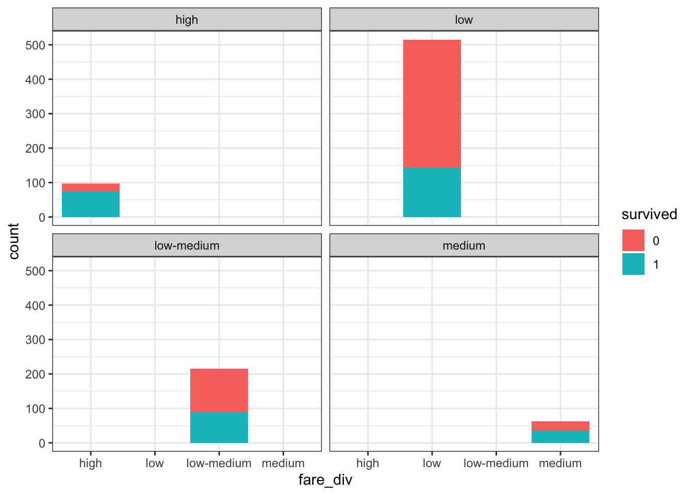
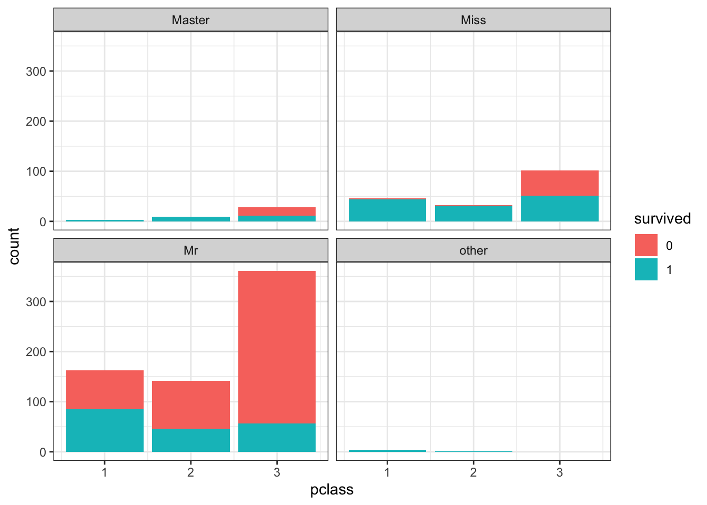
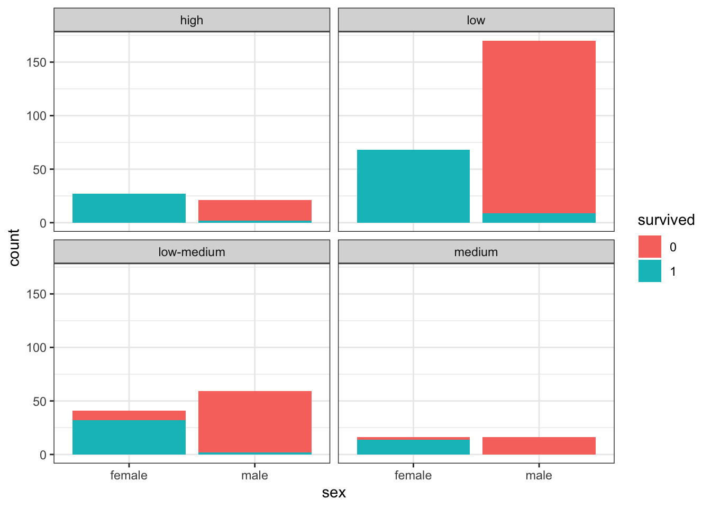
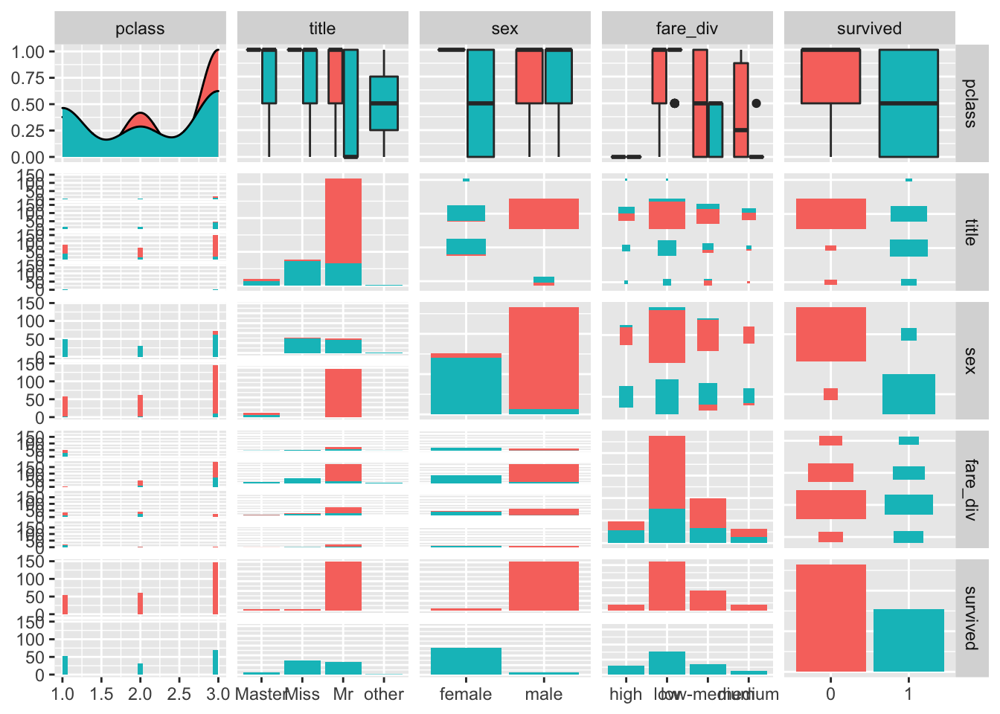

Two files were loaded, Test.csv and Train.csv. The column name for data contains uppercase, so renaming them with lowercase.
names(test) <- tolower(names(test))
names(train) <- tolower(names(train))Adding survived column missing in Test data and combining both of them in single dataframe, df_titanic.
test<- test %>% mutate(survived = "none")
train<- train[, c(1,3:12,2)]
head(test, 2)## # A tibble: 2 x 12
## passengerid pclass name sex age sibsp parch ticket fare cabin embarked survived
## <dbl> <dbl> <chr> <chr> <dbl> <dbl> <dbl> <chr> <dbl> <chr> <chr> <chr>
## 1 892 3 Kelly, Mr. … male 34.5 0 0 330911 7.83 <NA> Q none
## 2 893 3 Wilkes, Mrs… fema… 47 1 0 363272 7 <NA> S nonehead(train, 2)## # A tibble: 2 x 12
## passengerid pclass name sex age sibsp parch ticket fare cabin embarked survived
## <dbl> <dbl> <chr> <chr> <dbl> <dbl> <dbl> <chr> <dbl> <chr> <chr> <dbl>
## 1 1 3 Braund, Mr.… male 22 1 0 A/5 2… 7.25 <NA> S 0
## 2 2 1 Cumings, Mr… fema… 38 1 0 PC 17… 71.3 C85 C 1df_titanic <- rbind(train, test)Plotting data according to Passenger Class and Survived according to sex.
ggplot(train, aes(x = pclass, fill = as.factor(survived))) + geom_bar() + labs(fill = "survived") +facet_wrap(~sex) + theme_bw()
Name contains Mr, Mrs, Miss etc. Creating a new column according to title. If not specific then other.
df_titanic <- df_titanic %>% mutate(title = case_when(str_detect(name, "Mr.") ~ "Mr",
str_detect(name, "Mrs.") ~ "Mrs",
str_detect(name, "Miss.") ~ "Miss",
str_detect(name, "Master.") ~ "Master",
TRUE ~ "other"
))Title has Dr, Rv etc. so converting them into male according to sex.
for(i in 1:nrow(df_titanic)){
if(df_titanic[i,13] == "other"){
if(df_titanic[i,4] == "male"){df_titanic[i, 13] = "Mr"}
}
}
df_titanic %>% count(fare, sort = TRUE)## # A tibble: 282 x 2
## fare n
## <dbl> <int>
## 1 8.05 60
## 2 13 59
## 3 7.75 55
## 4 26 50
## 5 7.90 49
## 6 10.5 35
## 7 7.78 26
## 8 7.23 24
## 9 7.92 23
## 10 26.6 22
## # … with 272 more rowsThe survival rate depends on the fare of the ticket. So, grouping people according to fare. Fare is 20 or less then, low. Fare is more than 20 and less then or equalt to 50, low-medium. Fare is more than 50 and less then or equalt to 75, medium. Fare is75 or more, high.
df_titanic <- df_titanic %>% mutate(fare_div = ifelse(fare <= 20, "low",
ifelse(fare>20 & fare<=50, "low-medium",
ifelse(fare>50 & fare<= 75, "medium", "high"))))
df_titanic %>% filter(survived %in% c(0,1)) %>% ggplot( aes(x = fare_div, fill = as.factor(survived))) + geom_bar() + labs(fill = "survived") +facet_wrap(~fare_div)
Plotting according to newly generated data, title and displaying survived data.
df_titanic %>% filter(survived %in% c(0,1)) %>% ggplot( aes(x = pclass, fill = as.factor(survived))) + geom_bar() + labs(fill = "survived") +facet_wrap(~title) + theme_bw()
Building a model for prediction according to combined (“pclass”, “title”,“sex”,“fare_div”).
rf_train1<- df_titanic[1:891, c("pclass", "title","sex","fare_div")]
rf_label <- as.factor(df_titanic[1:891,]$survived)
set.seed(1234)
rf1 <- randomForest(x = rf_train1, y = rf_label, importance = TRUE, ntree = 1000)
rf1##
## Call:
## randomForest(x = rf_train1, y = rf_label, ntree = 1000, importance = TRUE)
## Type of random forest: classification
## Number of trees: 1000
## No. of variables tried at each split: 2
##
## OOB estimate of error rate: 16.95%
## Confusion matrix:
## 0 1 class.error
## 0 496 53 0.09653916
## 1 98 244 0.28654971Making prediction according t the prediction.
test_predict_df<- df_titanic[892:1309, c("pclass", "title","sex","fare_div")]
test_predict_df<- test_predict_df %>% replace_na(list(fare_div = "low"))
r1_predict<- predict(rf1, test_predict_df)
final_df <- data.frame(test_predict_df, survived = r1_predict)
final_df %>% count(survived, sort = TRUE)## survived n
## 1 0 264
## 2 1 154Plotting the output according to sex and fare division.
ggplot(data = final_df, aes(x = sex, fill = as.factor(survived)) ) + geom_bar() + theme_bw() + labs(fill = "survived") + facet_wrap(~fare_div)
final_df %>% ggpairs(mapping = aes(color = survived))##
plot: [1,1] [==>-------------------------------------------------------------] 4% est: 0s
plot: [1,2] [====>-----------------------------------------------------------] 8% est: 1s
plot: [1,3] [=======>--------------------------------------------------------] 12% est: 2s
plot: [1,4] [=========>------------------------------------------------------] 16% est: 2s
plot: [1,5] [============>---------------------------------------------------] 20% est: 2s
plot: [2,1] [==============>-------------------------------------------------] 24% est: 1s `stat_bin()` using `bins = 30`. Pick better value with `binwidth`.
##
plot: [2,2] [=================>----------------------------------------------] 28% est: 2s
plot: [2,3] [===================>--------------------------------------------] 32% est: 2s
plot: [2,4] [======================>-----------------------------------------] 36% est: 1s
plot: [2,5] [=========================>--------------------------------------] 40% est: 1s
plot: [3,1] [===========================>------------------------------------] 44% est: 1s `stat_bin()` using `bins = 30`. Pick better value with `binwidth`.
##
plot: [3,2] [==============================>---------------------------------] 48% est: 1s
plot: [3,3] [================================>-------------------------------] 52% est: 1s
plot: [3,4] [===================================>----------------------------] 56% est: 1s
plot: [3,5] [=====================================>--------------------------] 60% est: 1s
plot: [4,1] [========================================>-----------------------] 64% est: 1s `stat_bin()` using `bins = 30`. Pick better value with `binwidth`.
##
plot: [4,2] [===========================================>--------------------] 68% est: 1s
plot: [4,3] [=============================================>------------------] 72% est: 1s
plot: [4,4] [================================================>---------------] 76% est: 1s
plot: [4,5] [==================================================>-------------] 80% est: 0s
plot: [5,1] [=====================================================>----------] 84% est: 0s `stat_bin()` using `bins = 30`. Pick better value with `binwidth`.
##
plot: [5,2] [=======================================================>--------] 88% est: 0s
plot: [5,3] [==========================================================>-----] 92% est: 0s
plot: [5,4] [============================================================>---] 96% est: 0s
plot: [5,5] [================================================================]100% est: 0s
